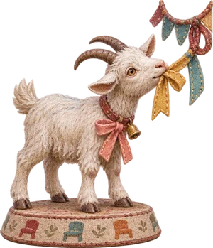
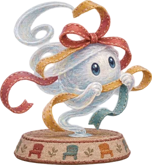
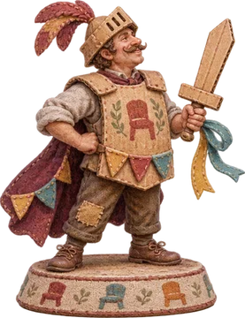

Выходные у заклинаний
Карты и фигурки ведущего
Игровой комплект
3 игрока · 4 игрока · 5 игроков · 6 игроков · 7 игроков · 8 игроков
Карта кампании

Поля боя


Герои


Персонажи ведущего


Противники


Любопытная дворовая коза 1Любопытная дворовая коза 2Любопытная дворовая коза 5Любопытная дворовая коза 3Любопытная дворовая коза 6Любопытная дворовая коза 4

Ленточный ветрошмыг 3Ленточный ветрошмыг 1Ленточный ветрошмыг 6Ленточный ветрошмыг 4Ленточный ветрошмыг 2Ленточный ветрошмыг 5

Картонный рыцарь любительской сцены 2Картонный рыцарь любительской сцены 1Картонный рыцарь любительской сцены 4Картонный рыцарь любительской сцены 3Картонный рыцарь любительской сцены 5Картонный рыцарь любительской сцены 6